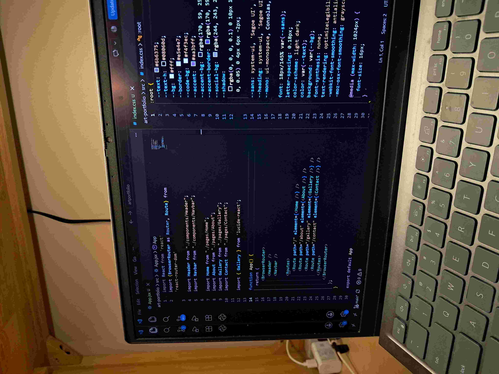
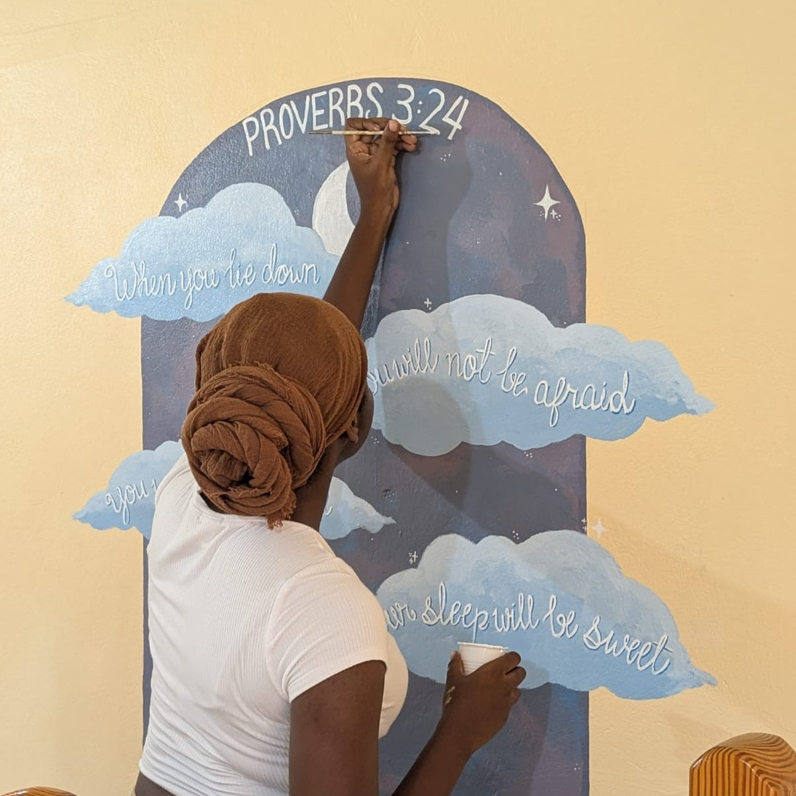

Building my First Website
Posted on September 21st, 2026 by Annique Patterson

Building my first website taught me that coding is less about typing fast and more about solving problems one small step at a time. I started with a plain HTML page containing a heading, a few paragraphs and an image, and it looked nothing like what I had pictured in my head. Adding CSS changed everything, but it also introduced new frustrations. A layout would refuse to line up, often caused by a single missing semicolon or a misspelled class name.
The biggest lessons were to build in small pieces and test often. Whenever something broke, I used the browser's developer tools to inspect the page and see what was really happening. I also learned to read my code slowly instead of guessing, and to save my progress with Git so I could undo mistakes. Seeing my own page finally load the way I planned made...
Painting Illustrative Murals: What I've Learned
Posted on October 4th, 2026 by Annique Patterson

Painting murals is very different from painting on a canvas. Walls are much bigger, the surface is rougher, and I'd have to plan far more before I picked up a brush. I sketch my design on paper, then enlarge the measurements to mark guidelines on the wall, which keeps everything in proportion. Cleaning and priming the wall first makes a big difference, because the paint covers more evenly and stuck better.
My main tips are to work from the big shapes down to the small details, and to step back often so you can see the whole picture. Use the right exterior paint if the mural will be outside, and check the weather, since heat dries the paint too fast and rain can ruin a fresh coat. Keep your brushes and rollers clean always, and take...